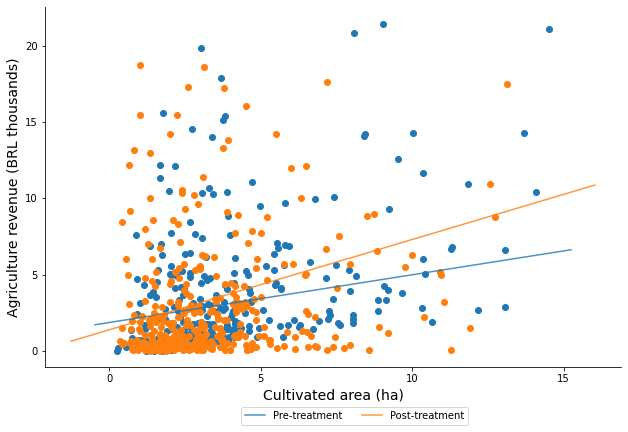
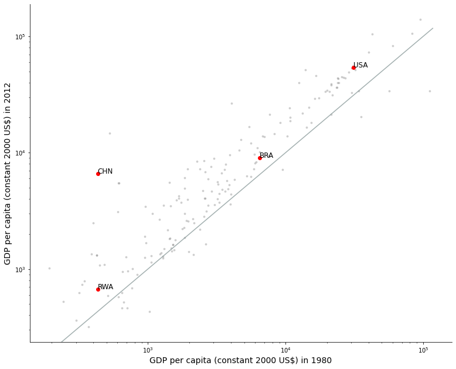
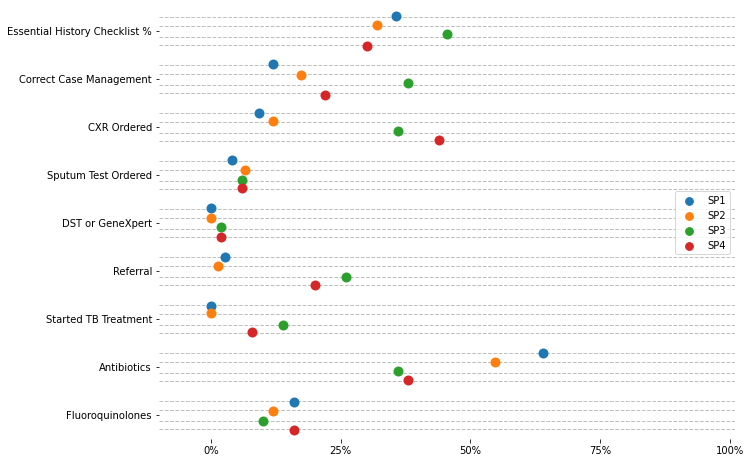

3. Scatter Plots#
import numpy as np, pandas as pd, matplotlib.pyplot as plt, seaborn as sns
import warnings
warnings.filterwarnings('ignore')
3.1. Graded Confidence Intervals#
# Import data
data0 = pd.read_stata("https://github.com/d2cml-ai/python_visual_library/raw/main/data/ScatterCI.dta")
# retreive features
features = ['cons_pae_m_sine', 'cons_pae_sd_sine']
data0 = data0[features][(data0[features[0]] < 140) & (data0[features[1]] < 30)]
data01 = data0.sample(100)
fig = plt.figure(figsize=(12, 8), facecolor = "white")
ax = fig.add_axes([.1, 1, 1, 1])
omit = ['right', 'top']
sns.regplot(features[0], features[1], data = data01, ci = 90, color = "#353433", order = 2, label = "90%", scatter = False)
sns.regplot(features[0], features[1], data = data01, ci = 95, color = "#545454", order = 2, label = "95%", scatter = False)
sns.regplot(features[0], features[1], data = data01, ci = 99, color = "#9b9b9b", order = 2, label = "99%", scatter = False)
sns.regplot(features[0], features[1], data = data01, ci = 0, color = "black", order = 2, label = "", scatter = False)
ax.scatter(features[0], features[1], data = data01, s = 9, color = "#808080", label = "")
ax.legend(title = "Confidence intervals", loc = (.85, .1), prop={'size': 14})
ax.spines[omit].set_visible(False)
ax.set_ylabel(r'$\widehat{s}$', size = 19)
ax.set_xlabel(r'$\widehat{m}$', size = 19)
plt.show();
# plt.savefig("../figs/03scatter_01.png")
---------------------------------------------------------------------------
TypeError Traceback (most recent call last)
Cell In[3], line 6
2 ax = fig.add_axes([.1, 1, 1, 1])
4 omit = ['right', 'top']
----> 6 sns.regplot(features[0], features[1], data = data01, ci = 90, color = "#353433", order = 2, label = "90%", scatter = False)
7 sns.regplot(features[0], features[1], data = data01, ci = 95, color = "#545454", order = 2, label = "95%", scatter = False)
8 sns.regplot(features[0], features[1], data = data01, ci = 99, color = "#9b9b9b", order = 2, label = "99%", scatter = False)
TypeError: regplot() got multiple values for argument 'data'
3.2. With Fitted Line#
# import Data
data1 = pd.read_stata("https://github.com/d2cml-ai/python_visual_library/raw/main/data/ScatterFittedLine.dta")
data1.head(3)
| hhid | post | area_cult | revenue | |
|---|---|---|---|---|
| 0 | 15025.0 | 0.0 | 11.071095 | 3.226190 |
| 1 | 19048.0 | 1.0 | 2.471546 | 0.526227 |
| 2 | 14495.0 | 0.0 | 1.132170 | 0.332619 |
# Plots elemente
fig = plt.figure(figsize=(8, 5), facecolor="white")
ax = fig.add_axes([.1, 1, 1, 1])
## Simple line function
def abline(slope, intercept, lbl = "None"):
"""Plot a line from slope and intercept"""
# Actual features
axes = plt.gca()
x_vals = np.array(axes.get_xlim())
y_vals = intercept + slope * x_vals
# abline plot
plt.plot(x_vals, y_vals, '-', alpha = .8, label = lbl)
## Data subsets
data10 = data1[data1.post == 0]
data11 = data1[data1.post == 1]
## slope and intercept
m0, b0 = np.polyfit(data10.area_cult, data10.revenue, 1)
m1, b1 = np.polyfit(data11.area_cult, data11.revenue, 1)
## legend labels
lbs = ["Post-treatment", "Pre-treatment"]
omit = ["right", "top"]
## Scatter
ax.scatter('area_cult', 'revenue', data = data1[data1.post == 1], label = "")
ax.scatter('area_cult', 'revenue', data = data1[data1.post == 0], label = "")
## Linear
abline(m0, b0, lbs[1])
abline(m1, b1, lbs[0])
## aesthetic
ax.legend(ncol = 2, loc = (.34, -.16))
ax.set_xticks(np.arange(0, 16, 5))
ax.set_yticks(np.arange(0, 21, 5))
ax.set_xlabel("Cultivated area (ha)", size = 14)
ax.set_ylabel("Agriculture revenue (BRL thousands)", size = 14)
ax.spines[omit].set_visible(False)
# plt.savefig("../figs/03scatter_02.png", bbox_inches='tight', dpi = 400)

3.3. With enphasized labels#
## Import data
data3 = pd.read_csv("https://raw.githubusercontent.com/d2cml-ai/python_visual_library/main/data/wd_indicator.csv")
features = ['iso3c', '1980', '2012']
data3 = data3[features]
high_lights = data3[data3['iso3c'].str.contains('USA|CHN|BRA|RWA')]
high_lights
| iso3c | 1980 | 2012 | |
|---|---|---|---|
| 73 | BRA | 6500.387806 | 9056.580438 |
| 88 | CHN | 430.854649 | 6591.650851 |
| 209 | RWA | 430.763833 | 668.828598 |
| 253 | USA | 31161.930725 | 54213.459552 |
# Plots elements
fig = plt.figure(figsize = (10, 8), facecolor = "white")
ax = fig.add_axes([.1, 1, 1, 1])
omit = ['right', 'top']
# same function
def abline(slope, intercept, colors = "#8b9b9b"):
"""Plot a line from slope and intercept"""
axes = plt.gca()
x_vals = np.array(axes.get_xlim())
y_vals = intercept + slope * x_vals
# line plot
plt.plot(x_vals, y_vals, '-', color = colors, alpha = .8)
# scatter plots
ax.scatter("1980", "2012", data = data3, color = "#808080", alpha = .3, s = 8)
# hightlight scatter
ax.scatter("1980", "2012", data = high_lights, color = "red")
# Labels
for i in range(4):
aux_ref = high_lights.iloc[i]
x_ref = aux_ref["1980"]
y_ref = aux_ref["2012"]
ax.text(x_ref, y_ref, aux_ref['iso3c'], size = 12)
# slope 1
abline(1, 0)
# aesthetic
## log 10 base
ax.semilogy()
ax.semilogx()
## axis label
ax.set_ylabel("GDP per capita (constant 2000 US$) in 2012", size = 14)
ax.set_xlabel("GDP per capita (constant 2000 US$) in 1980", size = 14)
## omit borders
ax.spines[omit].set_visible(False)
# plt.savefig("../figs/03scatter_03.png")

3.4. Stratified#
# Import data
data4 = pd.read_csv("https://raw.githubusercontent.com/d2cml-ai/python_visual_library/main/data/stratified.csv")
data4['value100'] = data4['value'] * 100
data4.head(3)
| sp_case | key | value | value100 | |
|---|---|---|---|---|
| 0 | 1 | Essential History Checklist % | 0.356667 | 35.666667 |
| 1 | 1 | Correct Case Management | 0.120000 | 12.000000 |
| 2 | 1 | CXR Ordered | 0.093333 | 9.333333 |
# Auxiliar module
import matplotlib.ticker as mtick
omit = ['right', 'top', 'bottom', 'left']
legend_label = ["SP1", "SP2", "SP3", "SP4"]
# Plot elements
fig = plt.figure(figsize=(8, 6), facecolor = "white")
ax = fig.add_axes([.1, 1, 1, 1])
# Dotplots
p = sns.stripplot(
x="value100", y="key", data=data4, hue = "sp_case", size=10, dodge = True
, jitter=.12
)
# Line jitter
for i in range(len(set(data4.key))):
jitter = .12
j = [i - 2.4 * jitter, i - .9 * jitter, i + jitter, i + 2.4 * jitter]
for line in j:
plt.axhline(line, linestyle = "--", color = "#808080", alpha = .5, lw = 1)
# aesthetics
## No labels
ax.set_xlabel("")
ax.set_ylabel("")
ax.set_xlim(-10, 101)
## percet axis
p.xaxis.set_major_formatter(mtick.PercentFormatter()) # mticks
## breaks x axis by 25%
plt.xticks(np.arange(0, 101, 25))
p.spines[omit].set_visible(False)
## omit legend title
p.legend_.set_title("")
## Update legend labels
for t, l in zip(p.legend_.texts, legend_label):
t.set_text(l)
plt.show();
# plt.savefig("../figs/03scatter_04.png", bbox_inches='tight', dpi = 400)

3.5. Polynomial#
# Import data
data5 = pd.read_stata("https://github.com/d2cml-ai/python_visual_library/raw/main/data/ScatterPolynomial.dta")
data5 = data5[data5.cons_pae_m_sine < 230]
data6 = data5[data5.cons_pae_m_sine < 230]
c:\python38\lib\site-packages\pandas\io\stata.py:1514: UnicodeWarning:
One or more strings in the dta file could not be decoded using utf-8, and
so the fallback encoding of latin-1 is being used. This can happen when a file
has been incorrectly encoded by Stata or some other software. You should verify
the string values returned are correct.
warnings.warn(msg, UnicodeWarning)
label_size = 15
omit = ['right', 'top']
fig, (ax1, ax2) = plt.subplots(1, 2, sharey = False, figsize=(12, 6), facecolor = "white")
fig.subplots_adjust(wspace = .2)
x_l, y_l = "cons_pae_m_sine", "cons_pae_sd_sine"
sns.regplot(x_l, y_l, data = data6, ax = ax1, scatter = False, order = 2, color = "#4f4d4b", ci = 95)
sns.regplot(x_l,"cv", data = data6, ax = ax2, scatter = False, order = 2, color = "#4f4d4b", ci = 95)
sns.regplot(x_l, y_l, data = data6, ax = ax1, scatter = False, order = 2, color = "red", ci = 0)
sns.regplot(x_l,"cv", data = data6, ax = ax2, scatter = False, order = 2, color = "red", ci = 0)
ax1.scatter(x_l, y_l, data = data6, alpha = .1, c = "#808080", s = 3)
ax2.scatter(x_l,"cv", data = data6, alpha = .1, c = "#808080", s = 3)
ax1.set_ylabel(r"$\hat{s}$", size = label_size)
ax1.set_xlabel(r"$\hat{m}$", size = label_size)
ax1.spines[omit].set_visible(False)
ax2.set_ylabel(r"$\hat{s}/\hat{m}$", size = label_size)
ax2.set_xlabel(r"$\hat{m}$", size = label_size)
ax2.spines[omit].set_visible(False)
plt.sca(ax1)
plt.xticks([100, 150, 200])
plt.yticks([0, 25, 50, 75])
plt.sca(ax2)
plt.xticks([100, 150, 200])
plt.yticks([.3, .5, .7])
plt.show();
# plt.savefig("../figs/03scatter_05.png", bbox_inches='tight')
c:\python38\lib\site-packages\seaborn\_decorators.py:36: FutureWarning: Pass the following variables as keyword args: x, y. From version 0.12, the only valid positional argument will be `data`, and passing other arguments without an explicit keyword will result in an error or misinterpretation.
warnings.warn(
([<matplotlib.axis.YTick at 0x1e279972df0>,
<matplotlib.axis.YTick at 0x1e279972730>,
<matplotlib.axis.YTick at 0x1e2799813d0>],
[Text(0, 0, ''), Text(0, 0, ''), Text(0, 0, '')])